live sehen
live sehen
 Quellcode sehen
Quellcode sehen
Management System Projekt
Einführung
Ich wurde als Praktikant damit beauftragt, eine Webanwendung zu entwickeln, die die Angestellten und die Ausrüstung in den verschiedenen Räumen des Berufungsgerichts verwaltet. Das Berufungsgericht hat große Schwierigkeiten, die dort arbeitenden Angestellten zu verwalten und die Materialien effizient auf die Räume zu verteilen.
Diese Anwendung wird der Verwaltung mehrere Dienste anbieten: Sie wird die Aufgabe vereinfachen, alle Mitarbeiter zu verwalten und ihre Bewegungen zwischen den Räumen zu verfolgen, sowie den Bestand der von der Regierung bereitgestellten Ausrüstung zu verwalten. Die Anwendung wird auch dazu beitragen, dass die Verwaltung Entscheidungen treffen kann, um die Arbeitsplätze gut zu verwalten.
Problematik
Im Berufungsgericht findet die Verwaltung eine Schwierigkeit darin, die von der Regierung bereitgestellte Ausrüstung zu verwalten, ebenso wie die Mitarbeiter, die so oft ihren Arbeitsplatz (die Räume) wechseln. Dies macht es schwierig, jeden Mitarbeiter zu verfolgen, der mit einer bestimmten Aufgabe betraut ist und wie man zu ihm gelangt, außerdem sind die materiellen Ressourcen wie Computer, Drucker, Monitore ... ihre Menge auf jedem Schreibtisch und der Rest auf dem Lager.
Jeder Raum kann mehrere Mitarbeiter und mehrere Geräte enthalten, daher müssen wir eine Anwendung erstellen, die all dies verwaltet, um die Verwaltung der Personal- und Materialressourcen zu erleichtern.
Pflichtenheft
- Einen einzigen Benutzer haben, der die Kontrolle und den vollen Zugriff auf die Anwendung hat (Administrator).
- Der Administrator kann sich in voller Sicherheit authentifizieren, mit der Fähigkeit, das Passwort und den Benutzernamen zu ändern.
- Mitarbeiter können mit ihren notwendigen Informationen hinzugefügt werden, ebenso wie man sie löschen kann.
- Der Arbeitsraum eines jeden Mitarbeiters wird beim Hinzufügen des Mitarbeiters angegeben, was bedeutet, dass man keinen Mitarbeiter ohne Arbeitsraum haben kann.
- Alle Informationen über die Mitarbeiter können geändert werden.
- Die Anwendung speichert das Versetzungsdatum jedes Mal, wenn ein Mitarbeiter in einen anderen Raum versetzt wird, und berechnet die Zeit, die er dort verblieben ist.
- Das Löschen eines Mitarbeiters markiert nur, dass dieser Mitarbeiter gegangen ist. Die identifizierenden Informationen und der Transferverlauf über die Mitarbeiter bleiben im Archiv zugänglich.
- Ausrüstungen können mit Details, Typ, Modell und Menge hinzugefügt werden (das Detailfeld, in dem Informationen wie Konfiguration, Preis oder andere Notizen gespeichert werden, ist nicht obligatorisch).
- Ausrüstungen werden beim Hinzufügen automatisch im Lagerraum gespeichert, danach können sie zu den Räumen hinzugefügen.
- Das Entfernen von Ausrüstungen markiert nur, dass der Gegenstand entfernt wurde, und wird nicht in der Tabelle der Ausrüstungen angezeigt. Aber alle Informationen und die Menge, die zwischen den Räumen und dem Lager zirkuliert, bleiben im Archiv zugänglich.
- Die Anwendung muss den Archivbereich für Mitarbeiter und Ausrüstungen mit der Fähigkeit, sie wiederherzustellen, haben.
- Der Name und die Nummer sind bei der Erstellung eines Raums obligatorisch, man kann dann Ausrüstungen hinzufügen (optional).
- Man kann mehrere Ausrüstungen mit beliebiger Anzahl in einen Raum einfügen.
- Die Anwendung stellt sicher, dass die Menge, die man hinzufügen kann, ausreichend ist, wobei die Auswahl der Ausrüstungen in Abhängigkeit von den Ausrüstungen, die sich bereits im Lager befinden, angezeigt wird.
- Die Anwendung verwaltet die Lagermenge dynamisch, wenn eine Menge einer Ausrüstung in einem Raum hinzugefügt/entfernt wird.
- Sie können den Namen und die Nummer des Raums sowie die Anzahl der Geräte, die sich bereits in dem Raum befinden, ändern und neue Geräte zu dem Raum hinzufügen, wenn sie geändert werden.
- Die Anwendung muss sicherstellen, dass der Raum leer von Mitarbeitern und Geräten ist, bevor sie ihn löscht.
- Die Navigation der Anwendung sollte einfach und intuitiv sein.
- Die Anwendung sollte in jedem Abschnitt eine Suchfunktion enthalten, die dabei hilft, Datensätze auf der Grundlage beliebiger bereitgestellter Informationen zu finden.
- Tabellen müssen indiziert sein, mit der Funktionalität, sie nach Spalten zu ordnen.
- Die Anwendung muss mit Sonderfällen umgehen, bei denen Fehler auftreten können.
- Wenn ein Fehler auftritt, muss die Anwendung eine Meldung anzeigen, die den Fehlertyp enthält.
Klassendiagramm des Projekts
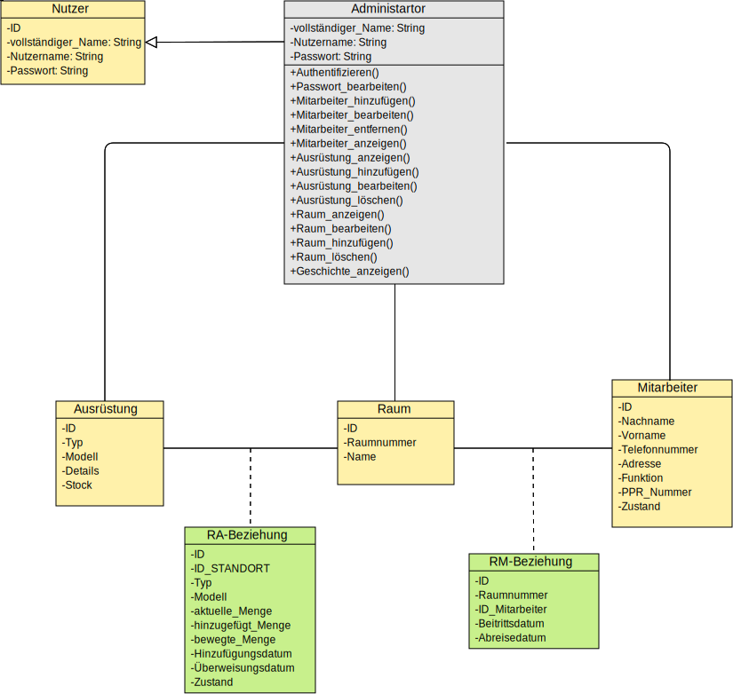Die Hauptseiten der Anwendung
Anmeldeseite (Authentifizierung)
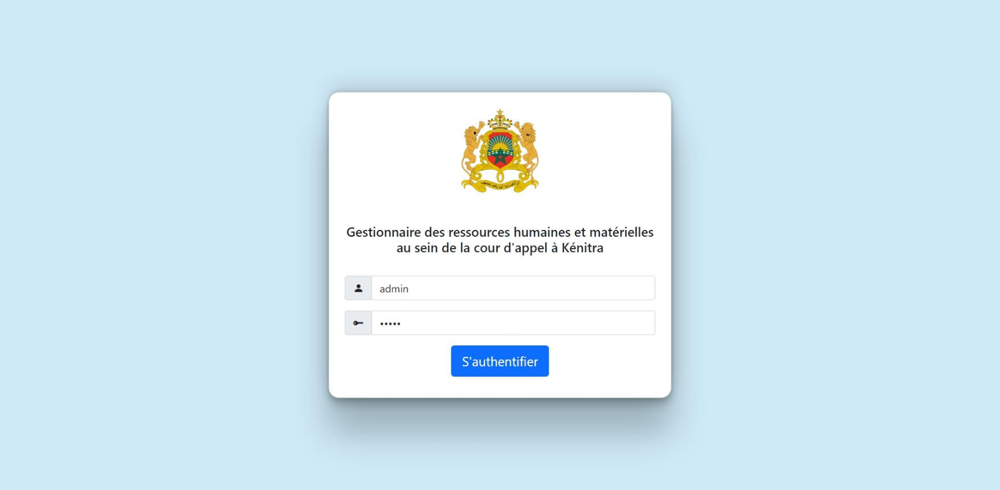Die Anmeldeseite enthält eine Box mit Einträgen für den Benutzernamen und das Passwort, das Logo des Justizministeriums und einen Titel, der die Hauptfunktionalität der Anwendung darstellt, um sie zu unterscheiden, da es andere Anwendungen gibt, die für andere Interessen verwendet werden, die auf dem lokalen Server des Berufungsgerichts gehostet werden.
Seite der Mitarbeiter
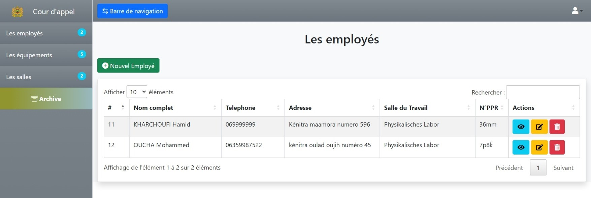Der Inhalt der Mitarbeiterseite enthält eine dynamische Tabelle, in der alle Mitarbeiter und deren relevante Informationen angezeigt werden, mit Verwaltungsschaltflächen (Hinzufügen, Anzeigen, Ändern und Löschen) .
Diese Seite erbt wie die anderen Seiten ein eindeutiges Template. Diese Template besteht aus einer Kopfzeile und einer Navigationsleiste. Die Kopfzeile hat ein Symbol einer Benutzerform, die ein Auswahlmenü zum Abmelden und Ändern des Passworts und des Benutzernamens anzeigt.
Fügen wir zu Demonstrationszwecken einen neuen Mitarbeiter hinzu: 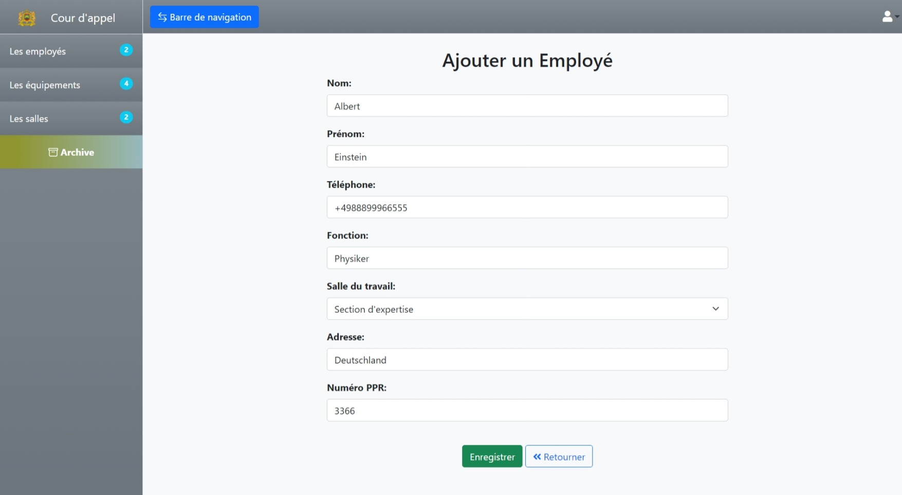
Der Mitarbeiter ist erfolgreich registriert! 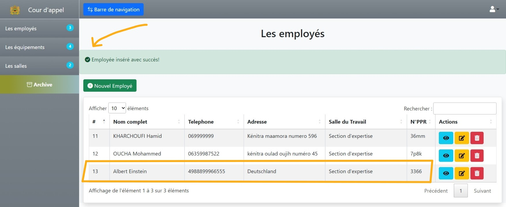
Lassen Sie uns die Details des kürzlich hinzugefügten Mitarbeiters überprüfen, indem wir auf das Augensymbol klicken. Das System verfolgt auch die Versetzungen des Mitarbeiters zwischen den Räumen des Gerichts auf der Unterseite "Geschichte". 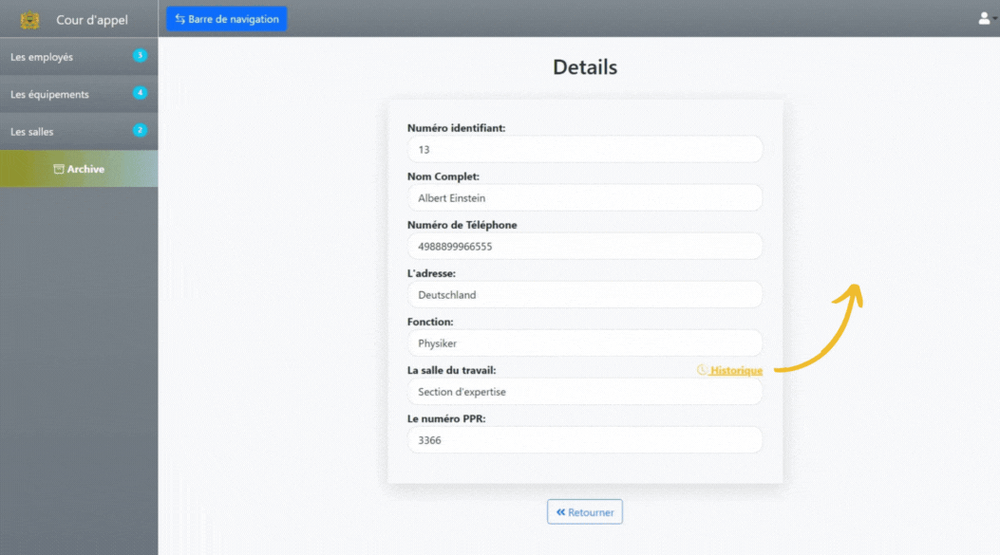
Seite der Ausrüstung
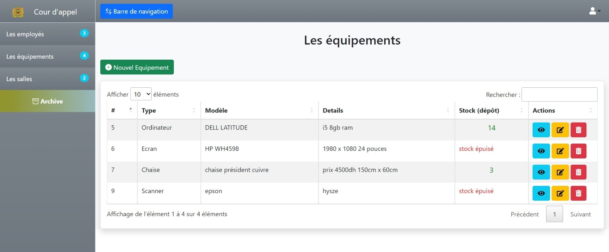Hier können wir die gesamte Ausrüstung, die sich im Depot des Berufungsgerichts befindet, mit dem verfügbaren Bestand und anderen Details. es gibt auch die Schaltflächen zur Verwaltung (Hinzufügen, Anzeigen, Ändern und Löschen) .
Fügen wir zu Demonstrationszwecken eine neue Ausrüstung hinzu: 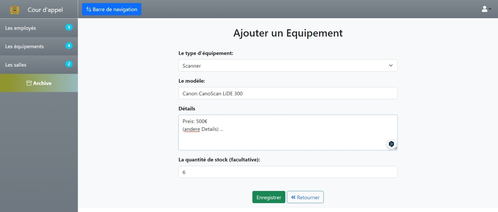
Die Ausrüstung ist erfolgreich registriert! 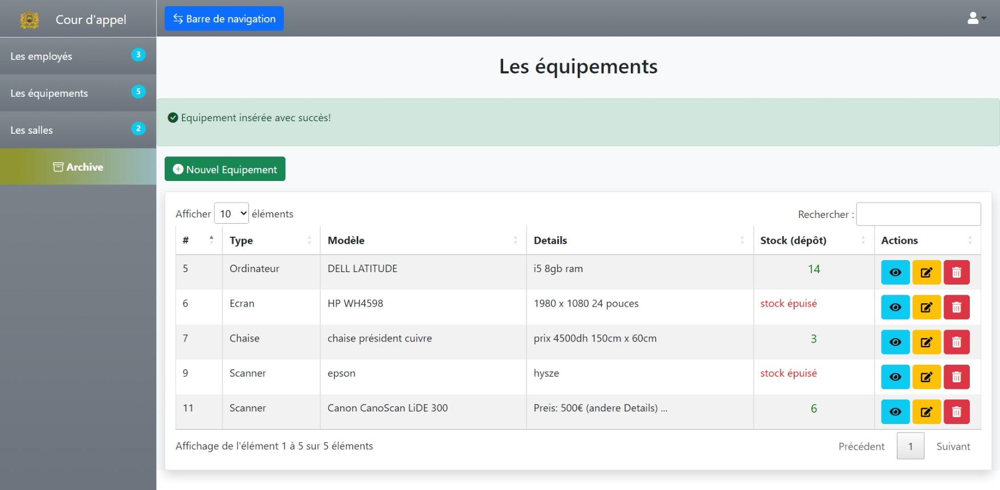
Lassen Sie uns die Details der kürzlich hinzugefügter Ausrüstung überprüfen. Wir können auch den verfügbaren Bestand sehen und sehen, in welchem Raum die Ausrüstung bereitgestellt wurde (Es erscheint in keinem Raum, da wir es noch nicht getan haben) . 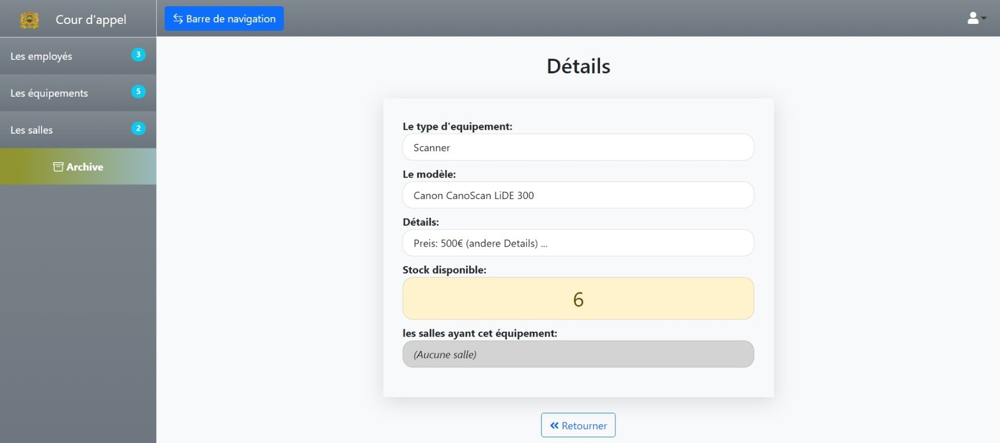
Seite der Räume
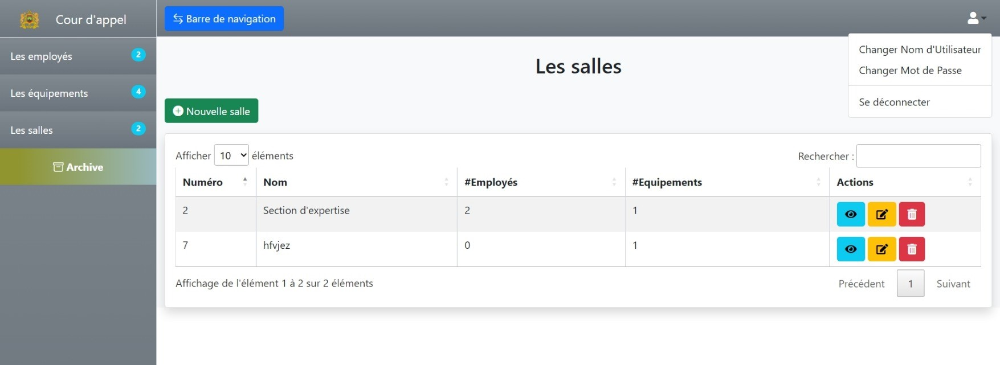Die erste Seite, die nach der Authentifizierung angezeigt wird, ist die Raumseite. Der Inhalt der Seite Räume enthält eine dynamische Tabelle, die die aktuellen Räume innerhalb des Berufungsgerichts und die Anzahl der Mitarbeiter/Ausrüstungen in jedem Raum anzeigt sowie die Verwaltungsschaltflächen.
Lassen Sie uns der raum des Fachwissens ("Section d'expertise") überprüfen. Wir können sehen, dass der neu hinzugefügte Mitarbeiter dort arbeitet und es keine Ausrüstung gibt. 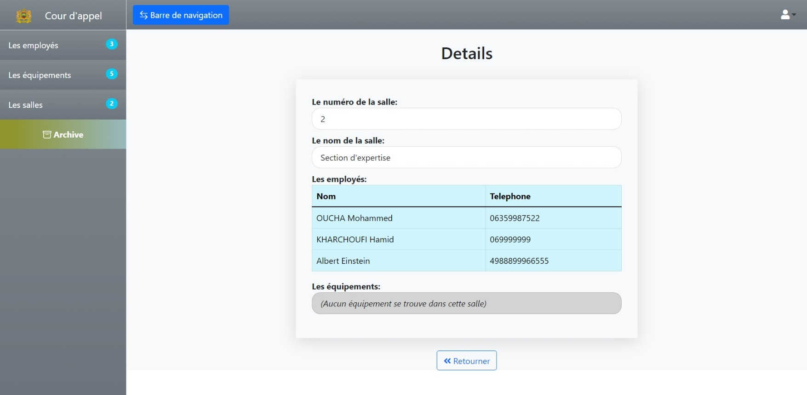
Lassen Sie uns also den Raum modifizieren, indem wir die kürzlich hinzugefügte Ausrüstung hinzufügen und den Namen des Raums in etwas wie "Physikalisches Labor" ändern. 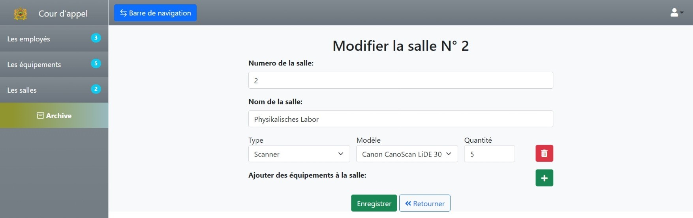
die Änderung erfolgreich durchgeführt wurde! 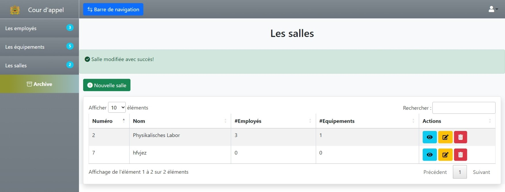
Wir können nun die hinzugefügte Ausrüstung mit ihrer Anzahl auf der Detailseite des Raums sehen. 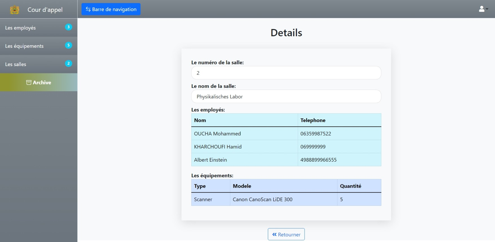
Wenn wir die Detailseite der Ausrüstung überprüfen, können wir den verbleibenden Bestand im Depot und die Räume sehen, die diese bestimmte Ausrüstung enthalten. 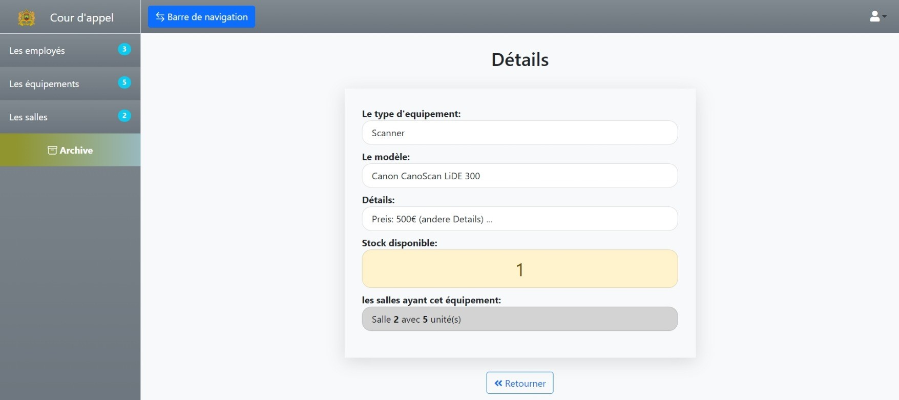
Archivseite
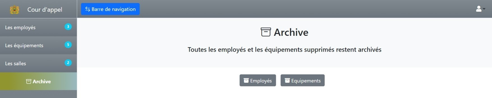
Auf der Archivseite werden zwei Optionen zur Auswahl angezeigt: das Mitarbeiterarchiv und das Ausrüstungsarchiv.
Die gelöschten Mitarbeiter und Ausrüstungen werden gespeichert und können über diesen Bereich wieder aufgerufen werden.
Löschen wir zu Demonstrationszwecken die kürzlich hinzugefügten Ausrüstung und Mitarbeiter (Bei der Löschung eines Equipments, werden alle Bestände im Depot und die Mengen in den Räumen gemeinsam ausgelöscht) : 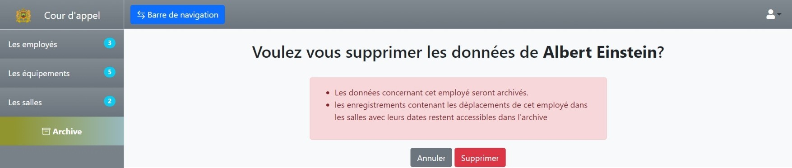 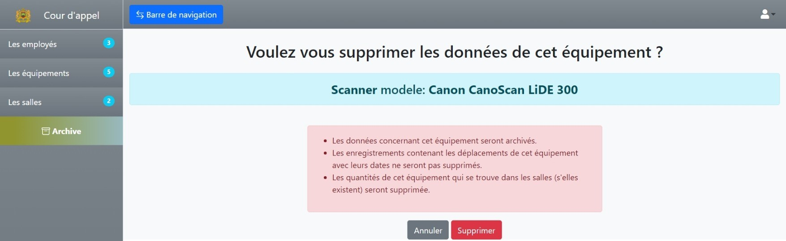
Die Seite des Mitarbeiterarchivs enthält eine dynamische Tabelle der gelöschten Mitarbeiter mit der Möglichkeit, sie wiederherzustellen und auf ihre Historie zuzugreifen. 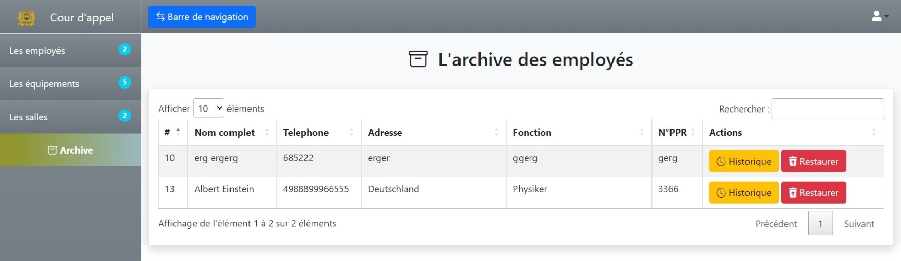
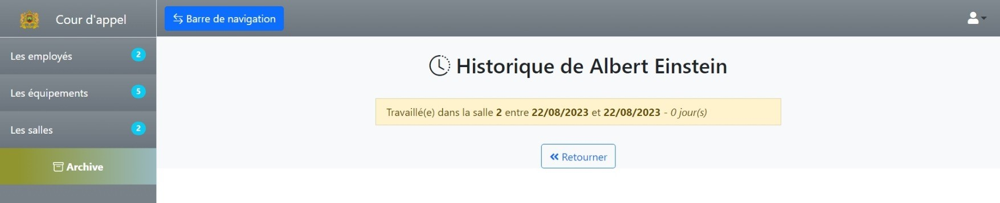 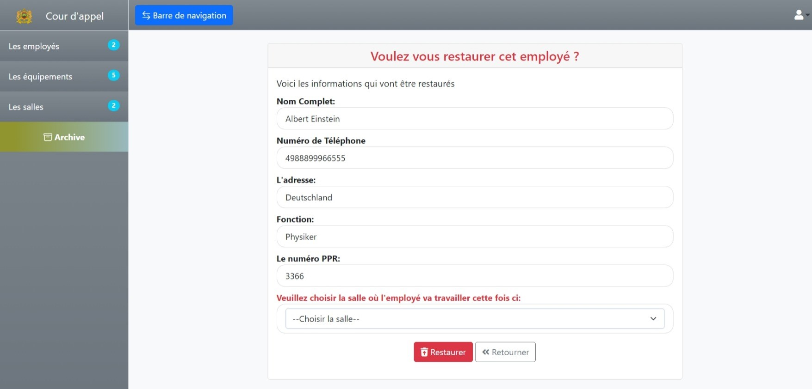
Bei der Wiederherstellung des Mitarbeiters muss ein Raum gewählt werden.
Die Seite des Ausrüstungsarchiv enthält eine dynamische Tabelle der gelöschten Ausrüstungen mit der Möglichkeit, sie wiederherzustellen. 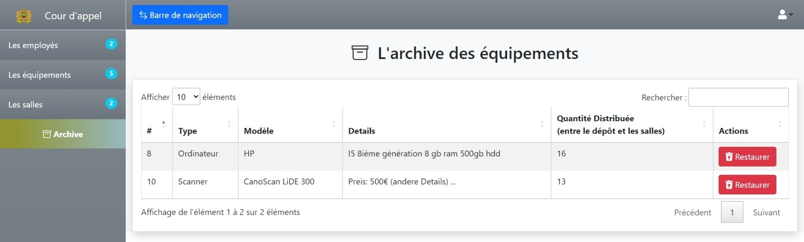 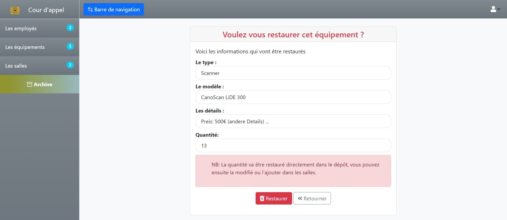
Vielen Dank, dass Sie sich die Zeit genommen haben, bis hierher zu lesen 🧡
Copyright © 2023 Younes Khoubaz. Alle Rechte vorbehalten.